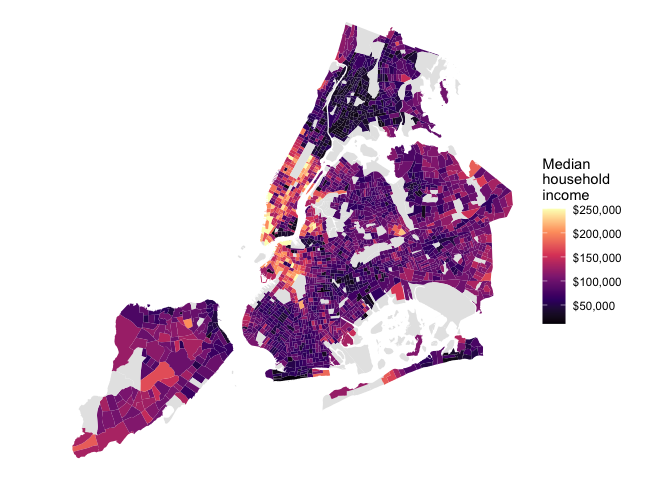

The nycdemog package provides county-, tract-, and block-level demographic data for the five counties of New York City, derived from the US Census Bureau via tidycensus. It provides a set of tibbles keyed by geoid covering race, age and sex, household structure, income and poverty, education, employment, housing, and language and nativity, alongside thin wrapper functions that help you make NYC-only queries against the Census API.
The tract- and block-level datasets join 1:1 to corresponding sf objects in the nycmaps package, on the geoid column. The county-level datasets join to nycmaps::nyc_boros_sf on the county column, which matches nycmaps::nyc_boros$short_county_name.
Installation
You can install the development version of nycdemog from GitHub with:
# install.packages("pak")
pak::pak("kjhealy/nycdemog")The pre-built data tables are in the package. The wrapper functions pull from the Census API and require you have a Census API key, set as the CENSUS_API_KEY environment variable.
Stored datasets
Every tibble has geoid and county as its first two columns. ACS estimates have _moe margin-of-error columns.
library(tibble)
library(nycdemog)
nyc_tract_acs_income_df
#> # A tibble: 2,327 × 16
#> geoid county name med_hhinc med_family_income per_capita_income gini
#> <chr> <chr> <chr> <dbl> <dbl> <dbl> <dbl>
#> 1 36005000100 Bronx Cens… NA NA 3826 NA
#> 2 36005000200 Bronx Cens… 123729 125234 36132 0.377
#> 3 36005000400 Bronx Cens… 105924 140505 37295 0.360
#> 4 36005001600 Bronx Cens… 52147 65353 29200 0.514
#> 5 36005001901 Bronx Cens… 58083 53073 42797 0.502
#> 6 36005001902 Bronx Cens… 48953 NA 24958 0.493
#> 7 36005001903 Bronx Cens… NA NA NA NA
#> 8 36005001904 Bronx Cens… NA NA NA NA
#> 9 36005002001 Bronx Cens… 22311 35461 14873 0.510
#> 10 36005002002 Bronx Cens… 18649 49142 24686 0.539
#> # ℹ 2,317 more rows
#> # ℹ 9 more variables: poverty_total <dbl>, poverty_below <dbl>,
#> # poverty_total_moe <dbl>, poverty_below_moe <dbl>, med_hhinc_moe <dbl>,
#> # gini_moe <dbl>, med_family_income_moe <dbl>, per_capita_income_moe <dbl>,
#> # poverty_rate <dbl>Full list:
| Object | Source | Geography | Rows |
|---|---|---|---|
nyc_block_20_race_df |
2020 Decennial PL | block | 37,984 |
nyc_block_20_adults_df |
2020 Decennial PL | block | 37,984 |
nyc_tract_20_age_sex_df |
2020 Decennial DHC | tract | 2,327 |
nyc_tract_20_household_df |
2020 Decennial DHC | tract | 2,327 |
nyc_tract_acs_race_df |
2020-2024 ACS 5-year | tract | 2,327 |
nyc_tract_acs_income_df |
2020-2024 ACS 5-year | tract | 2,327 |
nyc_tract_acs_education_df |
2020-2024 ACS 5-year | tract | 2,327 |
nyc_tract_acs_employment_df |
2020-2024 ACS 5-year | tract | 2,327 |
nyc_tract_acs_housing_df |
2020-2024 ACS 5-year | tract | 2,327 |
nyc_tract_acs_language_nativity_df |
2020-2024 ACS 5-year | tract | 2,327 |
nyc_county_20_race_df |
2020 Decennial PL | county | 5 |
nyc_county_20_adults_df |
2020 Decennial PL | county | 5 |
nyc_county_20_age_sex_df |
2020 Decennial DHC | county | 5 |
nyc_county_20_household_df |
2020 Decennial DHC | county | 5 |
nyc_county_acs_race_df |
2020-2024 ACS 5-year | county | 5 |
nyc_county_acs_income_df |
2020-2024 ACS 5-year | county | 5 |
nyc_county_acs_education_df |
2020-2024 ACS 5-year | county | 5 |
nyc_county_acs_employment_df |
2020-2024 ACS 5-year | county | 5 |
nyc_county_acs_housing_df |
2020-2024 ACS 5-year | county | 5 |
nyc_county_acs_language_nativity_df |
2020-2024 ACS 5-year | county | 5 |
Wrapper functions
get_nyc_acs() and get_nyc_decennial() are thin wrappers around tidycensus::get_acs() and tidycensus::get_decennial() that hard-code the five NYC counties, never download geometry, and return a tidy tibble keyed on a lowercase geoid.
library(nycdemog)
# Median household income, latest 5-year ACS, NYC tracts
get_nyc_acs(c(med_hhinc = "B19013_001"))
# Race and Hispanic origin with total population as the denominator
race_vars <- c(
nh_white = "B03002_003",
nh_black = "B03002_004",
nh_asian = "B03002_006",
hispanic = "B03002_012"
)
get_nyc_acs(race_vars, summary_var = "B03002_001")
# 2020 PL block-level race counts
get_nyc_decennial(
c(nh_white = "P2_005N", hispanic = "P2_002N"),
geography = "block",
sumfile = "pl",
summary_var = "P1_001N"
)
# One row per borough
get_nyc_acs(c(med_hhinc = "B19013_001"), geography = "county")Use load_nyc_variables() to browse the variable catalogues:
load_nyc_variables(2024, "acs5")
load_nyc_variables(2020, "pl")
load_nyc_variables(2020, "dhc")Joining to nycmaps
Every stored tract- or block-level tibble joins on geoid to the matching sf object in nycmaps; the county-level tibbles join to nycmaps::nyc_boros_sf on county. Mapping median household income across NYC tracts:
library(dplyr)
library(ggplot2)
library(sf)
library(nycmaps)
nyc_census_tracts_2020_sf |>
inner_join(nyc_tract_acs_income_df, by = "geoid") |>
ggplot(aes(fill = med_hhinc)) +
geom_sf(color = NA) +
scale_fill_viridis_c(
option = "magma",
labels = scales::label_dollar(),
na.value = "grey90"
) +
labs(fill = "Median\nhousehold\nincome") +
theme_void()
–
Hex photo: Detail from Terry from Sydney, “New York City 1979”.